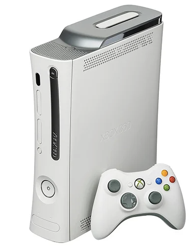
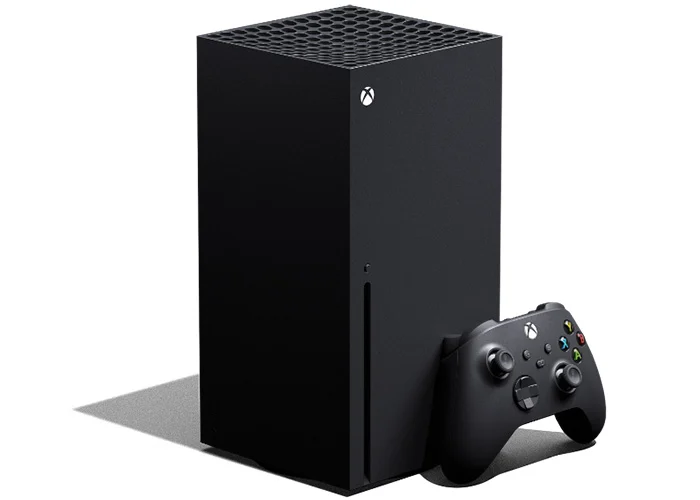

1

La Xbox d'origine avait différentes dates de sortie - la première Xbox est initialement sortie en Amérique le 15 novembre, 2001. Ce n'est que le 22 février 2002 que la Xbox originale est sortie au Japon, suivi d'une sortie le 14 mars 2002 en Europe et en Australie. La Xbox de première génération était en fait la sixième génération de consoles, en concurrence avec d'autres consoles de sixième génération comme la Sega Dreamcast, Sony PlayStation 2 et Nintendo GameCube.
2

Sortie fin 2005 - début 2006 dans le monde entier, un an avant la PlayStation 3, la Xbox 360 souffrait d'un approvisionnement insuffisant pour répondre à la forte demande. Au cours de sa vie, la Xbox 360 et tous ses modèles et variantes ont réussi à maintenir une part de marché presque égale avec la PlayStation 3 de Sony. La PlayStation 3 n'a que légèrement dépassé la Xbox 360 avec 87,4 millions de consoles vendues contre 84 millions de consoles Xbox 360 vendues (Source : Wikipedia).
3

La Xbox de troisième génération s'appelle la Xbox One. Initialement, lorsque la Xbox One est sortie, elle était livrée avec ou sans Kinect. Les utilisateurs qui souhaitaient les fonctionnalités Kinect paieraient 499 $ pour leur console au lancement. Les utilisateurs qui ne voulaient pas de Kinect ne paieraient que 399 $ pour leur Xbox One. La Xbox One d'origine avait une durée de vie incroyablement courte. La Xbox One est sortie le 13 novembre 2013, la Xbox d'origine a été abandonnée un peu moins de 3 ans plus tard. Cela était dû à la sortie de la Xbox One S.
4

La Xbox Series X de quatrième génération est sortie en même temps que la série S fin 2020. Si vous regardez le matériel, la série X est similaire à un PC de jeu préconstruit et comporte des pièces exceptionnelles pour son prix. Ce qui se démarque cependant entre le X et le S, c'est la taille ainsi que la conception globale. La nouvelle console Xbox, la série X, est beaucoup plus grande que la série S, la série X n'est également disponible qu'en noir, tandis que la série S est livrée en blanc. Ci-dessous, vous pouvez voir une comparaison entre les deux.
5

Contrairement à la série X, la série S ne prend en charge que jusqu'à 1440p à 120 FPS. Son prix bas et son petit extérieur signifient que Microsoft a dû supprimer des fonctionnalités pour que tout rentre dans le boîtier. La série S n'est pas en mesure de jouer à des jeux rétrocompatibles améliorés pour la Xbox One X, cependant, elle prend toujours en charge la rétrocompatibilité pour toutes les générations précédentes.